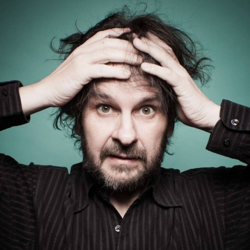

Peter Jackson
Biografía
(Pukerua Bay, North Island, 1961) Director de cine neozelandés, particularmente conocido como autor de la triunfal trilogía cinematográfica El Señor de los anillos. Colosal poema dotado de extraña belleza e impecable factura, La comunidad del anillo (The Fellowship of the Ring, 2001), Las dos torres (The Two Towers, 2002) y El retorno del rey (The Return of the King, 2003) son tres extraordinarias superproducciones que recibieron el aplauso unánime de la crítica y el público y se convirtieron en fabulosos éxitos mundiales de taquilla. La tercer entrega de esta ambiciosa adaptación de la obra de J. R. R. Tolkien, El retorno del rey, se alzó con la friolera de once premios Oscar.
Hijo único de Joan y Bill Jackson, sus padres decidieron su futuro al regalarle una cámara súper 8 la Navidad de 1969. Poco después vio fascinado en televisión el King Kong de 1933 y el abstruso filme de animación El Señor de los anillos (Ralph Bakshi, 1978), que le impulsó a leer la trilogía de Tolkien.
Desde entonces soñó con que algún día llevaría estas historias a la pantalla con todos los honores, y en 1983 dio el primer paso hacia su concreción. Mientras trabajaba en el periódico The Evening Post de la capital neozelandesa, adquirió una cámara de 16 mm y con ella y la ayuda de sus amigos empezó a trabajar los fines de semana en un cortometraje que, al final, se convirtió en un largo. Así nació, tras cuatro años de rodaje, Mal gusto (Bad Taste, 1987), que recorrió festivales y se convirtió en título de culto.
Ese mismo año se casó con Fran Walsh, su más estrecha colaboradora, y el tándem funcionó de maravilla en títulos como El delirante mundo de los Feebles (Meet The Feebles, 1989) o la decididamente gore Tu madre se ha comido a mi perro (Braindead, 1992).
El realizador neozelandés se iba haciendo un nombre en el cine fantástico y de terror, y sorprendió a medio mundo con Criaturas celestiales (Heavenly Creatures, 1994), un thriller basado en hechos reales (en el que se retrataba con sorprendente sensibilidad el caso de dos adolescentes matricidas de su país) por el que recibió el León de Oro del Festival de Venecia de 1995. Una de sus protagonistas fue la entonces desconocida Kate Winslet, que se haría archifamosa después con Titanic, de James Cameron. En 1995 se trasladó a Hollywood. Tras el falso documental Forgotten Silver, la pobre repercusión que obtuvo la película Agárrame esos fantasmas (The Frighteners, 1996) condujo al director a la realización de una de sus dos grandes obsesiones.
Devoto de la obra de Tolkien, Jackson fue poco a poco perfilando una versión cinematográfica de El señor de los anillos, la gran obra del escritor de origen sudafricano. Ya se habían realizado algunas (la más destacada fue la rodada por Ralph Bakshi en 1978, en la que se mezclaban actores con dibujos animados), pero ninguna de ellas había destacado por su calidad ni por su eficiente adaptación de la obra. Consciente de la dificultad de llevar a la gran pantalla el universo de Tolkien, Jackson esperó a que las nuevas tecnologías estuvieran lo suficientemente avanzadas para forjar en imágenes su particular visión del libro.
Jackson reunió un equipo de trabajo espectacular y multitudinario que comenzó a trabajar en Nueva Zelanda, donde los espectaculares paisajes de unas tierras prácticamente vírgenes sirvieron de digno escenario para crear la "tierra media" que imaginó Tolkien. Consiguió la financiación necesaria para llevar a cabo el proyecto y contrató a los mejores expertos en infografía que pudo para comenzar a trabajar con los actores. Muchos de ellos eran prácticamente desconocidos y se convertirían luego en rutilantes estrellas: Cate Blanchett, Orlando Bloom, Elijah Wood, Liv Tayler o Viggo Mortensen. Otros eran veteranos ilustres que aportaban su prestigio: Christopher Lee, Ian McKellen o John Rhys-Davies.
Con la infografía creó enormes ejércitos, tomas de batallas, ciudades inimaginables, criaturas imposibles y todo un universo de detalles que complementan los exteriores naturales y que dotan a las tres cintas de una fuerza impactante. De entre las recreaciones por ordenador destaca Góllum, un personaje central de la novela que fue diseñado artificialmente a través del movimiento de un actor de carne y hueso, Andy Serkis, al que el realizador hizo aparecer en pantalla al comienzo de la tercera parte como reconocimiento a su esfuerzo.
Jackson llevó a las salas una epopeya espectacular como pocas se habían visto en la gran pantalla. Los sucesivos estrenos (La comunidad del anillo en 2001, Las dos torres en 2002 y El retorno del rey en 2003) fueron vistos por millones de espectadores que abarrotaban los cines y esperaban ansiosamente la siguiente entrega. Los más críticos con el director (entre los que se encontraban, por supuesto, los seguidores más puristas de la obra de Tolkien) hubieron de reconocer que, les gustara o no, la saga del anillo se había convertido en un fenómeno de masas gracias a las adaptaciones de Jackson.
La venta de entradas, la mercadotecnia creada a su alrededor y el éxito de taquilla de las tres películas se vieron refrendados en la 76ª edición de los premios Oscar, donde Jackson logró un pleno histórico al recoger las once estatuillas a las que optaba por la tercera entrega de la saga, El retorno del rey, entre ellas la de mejor película, mejor director, mejor guión adaptado y mejor dirección artística. Con este aluvión de premios, el trabajo de Jackson se situó a la altura de Ben-Hur y Titanic, las cintas más galardonadas de la historia.
La industria tuvo que arrodillarse ante los 2.500 millones de euros que recaudó la trilogía, y vio impertérrita como las películas competían, de manera inconcebible, con otras igualmente esperadas por el gran público: las tres entregas de la saga de La Guerra de las Galaxias. George Lucas se vio obligado a alterar la fecha de estreno de algunas de ellas para no coincidir con las de Jackson.
Tras la saga del anillo, Jackson afrontó el otro proyecto que incubaba desde hacía tiempo: revisar el mito de King Kong rodando una nueva versión del filme de 1933 (dirigido por Merian C. Cooper y Ernest B. Schoedsack). Contó para ello, de nuevo, con el poder de las nuevas tecnologías, con las que creó (también a partir de los movimientos del actor Andy Serkis) un gorila de ocho metros de un realismo pasmoso. La cinta fue protagonizada por Naomi Watts y Adrien Brody, y obtuvo un gran éxito de taquilla. Como curiosidad debe mencionarse que el rostro del simio está directamente copiado de Copito de Nieve, el famoso gorila albino que vivió en el zoo de Barcelona hasta noviembre de 2003. La cinta mereció tres Oscar técnicos en la 78ª edición de los premios: mejor sonido, mejor edición de sonido y mejores efectos especiales.